Front Implants
A Solid Approach
An implant provides great stability for future restorations while being independent of neighboring teeth.
What to expect
At the appointment
-
 Duration 60-90 min
Duration 60-90 min - 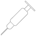 Oral anesthetic use
-
 Possible minor sensitivity
Possible minor sensitivity - 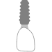 Possible tooth colored temporary
After Appoinment
- Post operative discomfort
- Avoid eating until numbness wears off
- Mild postoperative bleeding
What it is
There are many ways to replace a missing tooth
Typically a Implant is used for
- Replacement of a missing tooth
- Preservation of neighboring teeth in a natural state
- Bridge options are not viable
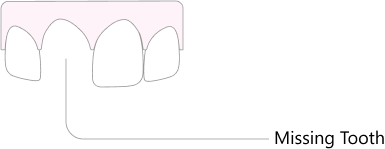 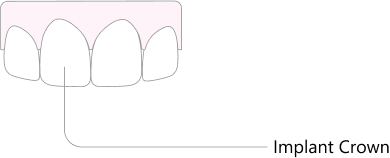
Pros
- Does not require cutting down perfectly healthy neighboring teeth
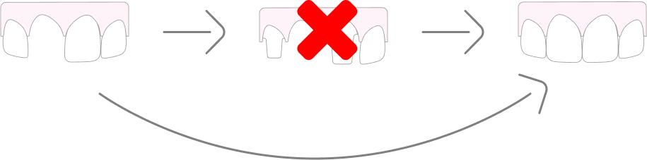
- Health of the implants only depends on health of surrounding bone
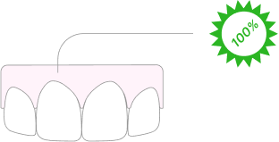
- Implant tooth has excellent cleansability and allows you to floss around itself
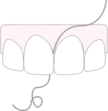
Cons
- Neighboring teeth may not look uniform in shape and color
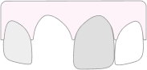
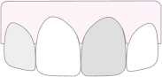
- No additional reinforcement to broken neighboring teeth
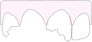
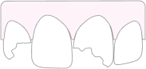
- Potential gum recession around implanted tooth
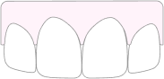
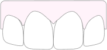
How it is accomplished
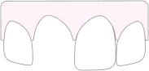 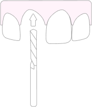
The implantation site is prepared with a blur
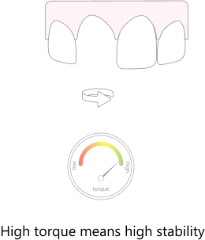
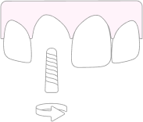 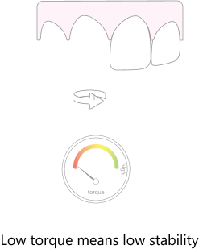
Implant is placed into the prepared site
- If torque values register high then the implant has stability, and is able to be used shortly after placement
- If the torque values register low then the implant has low stability, then the implant has to be submerged under the gum for extended healing period
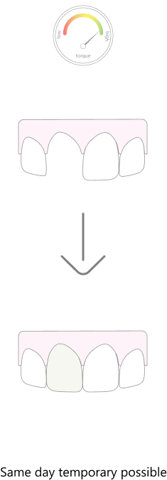 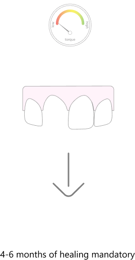
Materials
- Titanium The body of the implant is made up of titanium primarily, with other trace elements that give the fixture increased strength. Titanium is the only known metal that has the ability to fuse with bone without any rejection.